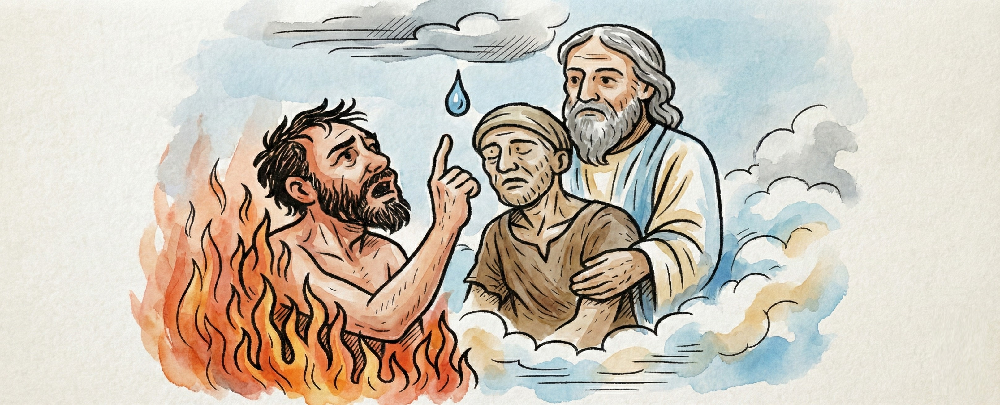
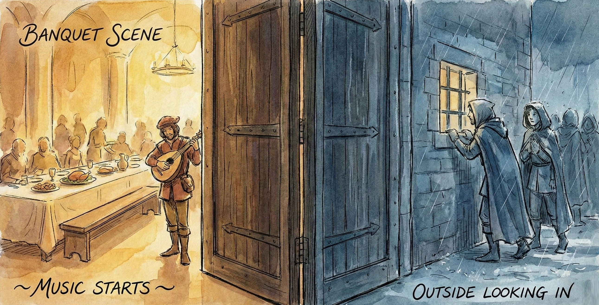
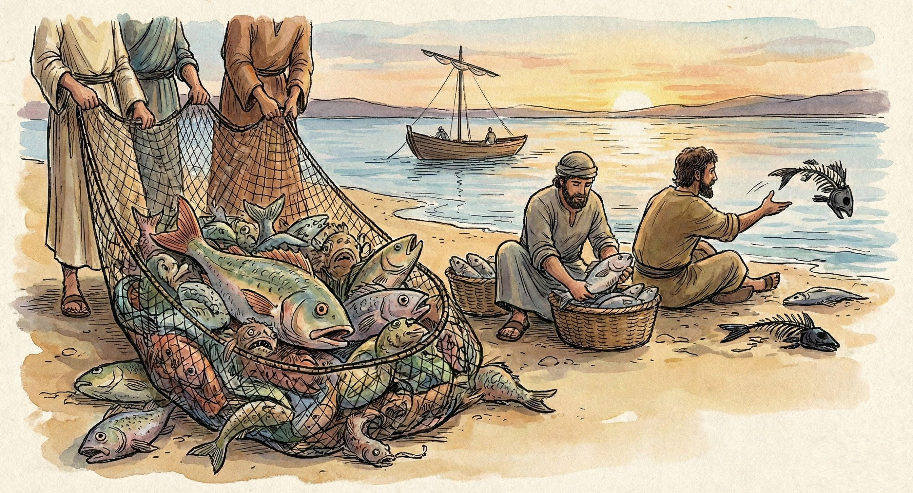
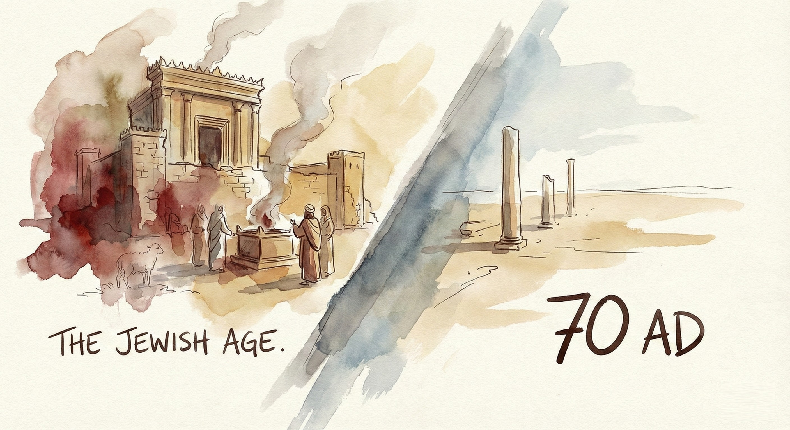

Chapter 4: The Verses And Phrases Everyone Can't Unsee
"Eternal fire... weeping and gnashing of teeth... outer darkness." - The verses that echo like alarm bells
Every person who starts to doubt hell hits the same wall.
It's not the priests, or the sermons, or even the childhood trauma.
It's the verses.
"Eternal fire."
"Weeping and gnashing of teeth."
"Outer darkness."
And, of course, that memorable image of a rich man begging Abraham and Lazarus for a single drop of water.
They live rent-free in our heads.
They haunt funerals, wake us in the middle of the night, and whisper that love might not have the final word after all.
But what if we've been hearing them through the wrong speakers?
What if these words were never meant to describe eternity, but to expose hypocrisy, pride, and spiritual blindness here and now?
Let's take them one by one and see what happens when the smoke clears.
1. The Rich Man and Lazarus: A Story, Not a Map
If Jesus wanted to give a GPS location for the afterlife, He would have drawn a diagram.
Instead, He told a story, and He aimed it straight at the Pharisees.
Jesus was immensely popular among those whom the religious big shots snubbed. For some reason these "sinners" found Him strangely interesting.
Now the tax collectors and "sinners" were all gathering around to hear him. But the Pharisees and the teachers of the law muttered, "This man welcomes sinners and eats with them."
Jesus picked up on the stares and piercing looks He was receiving from the religious leaders. He knew these guys believed He was messing with the current image of religious leadership.
Time to expose the hearts of these respected spiritual leaders, He thought. So he unleashed a blitz of five parables, the last of which is the one about the rich man and Lazarus. Here's how the story goes:
There is nothing here to indicate that this man was either good or bad. In fact, Jesus' hearers would have probably thought of this rich gentleman as law-abiding, since they associated obedience to the law with material blessings.
These two men died, and they ended up in different places. At this point, there is nothing to indicate why, of all people, Abraham should be the gatekeeper of this "paradise" or why he should occupy a position of authority.
Interesting. Apparently, people in these two places can actually recognize and converse with one another. It seems to me that catching glimpses of friends and family in indescribable pain, and being able to hear their gut-wrenching, peace-shattering screams, is going to make enjoying the bliss of heaven a little difficult! Some preachers believe the opposite. They believe that this audio-visual sensory input would actually "enhance the joys of the blest."
Setting that argument aside for the moment, let's ask ourselves a few questions about this scenario:
(1) Why would this rich person in hell refer to Abraham as his father?
(2) Why doesn't Abraham refute this title? On the contrary, he refers to the rich man as "Son."
(3) Why would the human tongue be more sensitive to fire than any other part of the body?
Most of the major religions have similar concepts of hell. This fact suggests that writings like Dante's Inferno, a work from the Reformation, may have done more to shape our understanding of the hell concept than Scripture.
Islam, for example, has verses in the Koran implying that when the flesh burns away in "hell," the hapless victim is supplied with new flesh to burn. Talk about hardcore!
Here's a strange kind of "balancing the scales" justice. Abraham seems to be implying that the rich man has already had his turn at jumping on the trampoline, and now it's Lazarus's turn. Sounds a little childish, don't you think?
Call me pedantic, but I would get a little nervous if I was with Abraham in this "paradise" and I overheard him say that the chasm prevents those in paradise from getting out for an excursion to hell. Could endless harp music be that bad?
Shouldn't he have simply said that the chasm prevents those in hell from getting out?
A strange thing happens next.
The fires of hell produce an incredible change of heart in the rich man. He appears to have developed-dare I say it?-an evangelist's heart. He doesn't want his brothers ending up where he is.
So it's not just the Holy Spirit that can bring about positive change in people's hearts. A good roasting appears to achieve the same effect. Could it be that the Crusaders were onto something?
Abraham says a startling thing here. He states that the writings of Moses and the Prophets should be enough to keep the rich man's brothers out of hell.
And yet nowhere in the writings of Moses (Genesis, Exodus, Leviticus, Numbers, and Deuteronomy) or the Prophets (Isaiah, Jeremiah, Lamentations, Ezekiel, Daniel, Hosea, Joel, Amos, Obadiah, Jonah, Micah, Nahum, Habakkuk, Zephaniah, Haggai, Zechariah, and Malachi) is any mention made of a place of fiery torment after death.
It appears to me if there's one thing this parable definitely does not describe, it's a place of suffering for non-believers after death.
I shall briefly outline here what Jesus was describing in this parable. Then you can decide for yourself what you think it means.
Jesus was describing how the Jewish nation was blessed ("rich") at that time, especially in the area of spiritual blessing ("purple and fine linen"). They had the Law and the Levitical priests, who wore linen garments and held impressive temple ceremonies. The non-Jewish nations (often referred to as "dogs," even by Jesus Himself) were not in this spiritually privileged position.
However, a time would come when the situation would be reversed. The Jewish nation had descended from Abraham (their "father"), and more specifically Judah, who had five brothers, a fact that Jesus' hearers would have known. This nation would shortly find themselves in the tormenting position of seeing the Gentile nations enjoying spiritual blessings. They themselves would not see and experience (at least for a period of time) what the Law and the Prophets were pointing to all along; namely, Jesus Christ and the kingdom of God.
Those Pharisees, who were struggling to come to terms with the tax collectors and other "sinners" constantly in Jesus' company, had no idea of the struggles or "torment" they would experience a few years later, when Jesus' disciples would cause the kingdom of God to be embraced by numerous non-Jewish nations!
I have decided to keep this explanation very brief. Please research this further in order to fully satisfy yourself on the true meaning of this parable.
Moving on, I'd like to briefly explore two short parables:
2. Weeping and Gnashing of Teeth: The Sound of Regret
The phrase appears half a dozen times, and every single time it's about heartbreak, not torture.
Picture the banquet scene Jesus describes: the doors swing shut, music starts, and those who hesitated realize they are outside looking in.
The "weeping and gnashing" is the sound of people saying, "How could we have missed it?"
It's the same emotion you feel when you realize you let grace walk right past you because you were too busy policing everyone else's faith.
In our language it might sound like, "They'll be kicking themselves."
There are no pitchforks in that picture, only the sting of hindsight.
We'll see specific illustrations of this in the examples which follow.
3. The Good Fish, Bad Fish and The Narrow Door
Before we explore the meaning of these parables, let's identify the specific passages referenced:
1. The Parable of the Net/Good and Bad Fish (Matthew 13:47-50): "Once again, the kingdom of heaven is like a net that was let down into the lake and caught all kinds of fish. When it was full, the fishermen pulled it up on the shore and sat down and collected the good fish in baskets, but threw the bad away. This is how it will be at the end of the age. The angels will come out and separate the evil from the righteous and throw them into the fiery furnace."
2. The Narrow Door (Luke 13:24-28): "Make every effort to enter through the narrow door, because many, I tell you, will try to enter and will not be able to. Once the owner of the house gets up and closes the door, you will stand outside knocking and pleading, 'Sir, open the door for us.' But he will answer, 'I don't know you or where you come from.' Then you will say, 'We ate and drank with you, and you taught in our streets.' But he will reply, 'I don't know you or where you come from. Away from me, all you evildoers!' There will be weeping there, and gnashing of teeth, when you see Abraham, Isaac and Jacob and all the prophets in the kingdom of God, but you yourselves thrown out."
Jesus said the angels would separate good from bad and throw the wicked into "the fiery furnace."
Sounds like hell until you notice His time marker: "This is how it will be at the end of the age."
One of the keys to understanding these cryptic-sounding parables lies in the secret of time words. Discover this secret and a large chunk of what Jesus said falls into place and lines up with the rest of Scripture.
So let's expose this secret.
Here are two lines:

- Line A: Has a starting point, but no end. It continues to infinity.
- Line B: Is finite.
If these lines represented the age in years of two persons, A and B, you'd be correct in saying that person A will live forever, while person B's life will end after a certain number of years.
Keep these lines in the back of your mind as we explore the time words in Jesus' parables.
The three-letter word "age" in this parable is the Greek word aion, which occurs 128 times in the King James Version. This was an unremarkable little Greek word until it slipped into the translation machine and got chewed up and spat out on the other side as the following English words:
| English Translation | Frequency |
|---|---|
| EVER | 71 |
| WORLD | 38 |
| NEVER (includes phrases with "never ever") | 6 |
| EVERMORE | 4 |
| AGE | 2 |
| ETERNAL | 2 |
| MISCELLANEOUS | 5 |
| TOTAL | 128 |
This poor little word, together with its adjective aionios, unfortunately did not survive the translation machine too well, emerging rather distorted on the other side.
Before the machine, aion was a simple little word that meant "a limited period of time"-a Line B word, if you like. The word age in the above table gets the prize for coming closest to the pin.
However, look at what popped out at the other end of the machine. Most of the chewed-up words are Line A words, or words referring to never-ending time.
We know that the word aion denotes a limited period of time because it has a plural form, which is aions. The fact that the word "decades" (plural) exists, means that a "decade" (singular) must be finite, as there can be more than one of it.
This is what you'd expect from a Line B word. If you can bear the repetition, it is possible to have more than one "decade" (a Line B word).
Try doing that with a Line A word: "John lived through two forevers." Doesn't make any sense, does it?
The plural form of aion is used in Ephesians 2:7:
So, if there's more than one "age," this must mean that age denotes a LIMITED PERIOD, with a beginning and an end.
Believe it or not, there is no Greek word in the Scriptures for the English word forever. The word ever is the closest you'll find. Sometimes the Greek equivalents of the words for and ever appear next to each other, but that means "for an age," not "for all time."
To show how this incorrect translating messes things up, let's look at some examples:
Sodom and Gomorrah are said by some to be an example of those who suffer the punishment of "eternal" fire. (Jude verse 7) However, Scripture clearly reveals that God will "restore the fortunes of Sodom." Ezekiel 16:53-55.
The Aaronic Priesthood is described as "everlasting." Exodus 40:15 (KJV): "Their anointing shall surely be an everlasting priesthood." But the Scriptures clearly state that it came to an end. Hebrews 7:14-18.
This incorrect translating would resign Jonah to the belly of the whale "forever," even though he was regurgitated from his cozy little spot three days later.
The reason for these puzzling inconsistencies? Errors in translating the Greek aion and its Hebrew equivalent olam.
When Jesus made statements like "This is how it will be at the end of the age," all He was describing was how it would be when the time period under discussion came to an end.
So, what time period was under discussion?
The age that Jesus almost exclusively referred to as coming to an end was "the Jewish Age," with its Aaronic priesthood and temple ceremonies with their horror blood rituals and brutal animal slaughter.
This age ended in AD 70, when the temple was destroyed, making the temple ceremonies impossible. The genealogical records were also destroyed at that time, when the Romans under Titus invaded Jerusalem. This made the Aaronic, Levitical priesthood impossible to perpetuate. You can't ordain new priests in the prescribed, correct manner if you can't find them. And you can't find them if you don't know who they are. And you can't know who they are without the list of who descended from whom.
The Jewish age had ended.
So, what do the short parables mean?
Both of the above parables refer to events preceding the end of that Jewish age, not the end of the world as we know it.
The parable of THE GOOD FISH AND THE BAD FISH concerns a process of separation that happened just prior to AD 70. Those Jews who heeded the words of various prophetic messengers (or "angels") were spared the intense persecution that came upon Jerusalem, the "fiery furnace" in this parable. Specifically, they were spared the persecution that came upon the large number of Jews who had not fled Jerusalem when it was under siege in the years immediately prior to AD 70. The writings of Josephus provide an interesting historical account of events at that time.
The same applies to the parable of THE NARROW DOOR. There certainly is no door in heaven upon which people will knock in order to gain access. This parable applied to those Jews who were privileged enough to hear and see Jesus teaching "in their streets."
There are many such parables that refer to the end of the Jewish age. I'm sure you will pick them up easily in your reading of Scripture.
Occasionally you will come across words like 'damnation' and 'condemn.' When you do, find out how the underlying Greek or Hebrew word is translated elsewhere in the Scriptures. You may be quite surprised!
For example, you won't find Hebrews 9:27 translated like this:
The singing and praising in churches would be somewhat muted if this were indeed the true destiny of every single human!
The word judgment is quite correctly used for the Greek word krisis here. Damnation simply makes no sense. And yet damnation is the word the King James translators used for the same Greek word, krisis, in John 5:29:
If the translators expect God to resign those who've done evil to damnation here, then He must resign all mankind to damnation in the previous verse.
Because the events around AD 70 are so crucial to our understanding of much of Jesus' words, I shall explore these events and related prophecies in the next chapter.
Now that we've established that the troubling verses about eternal fire and judgment refer to the end of the Jewish age rather than eternity, we need to understand how these prophecies were actually fulfilled.
Summary
The verses that once seemed to support eternal damnation were never about eternity at all.
They were warnings about a coming judgment on a specific generation: the generation that would see the temple fall and the Jewish age end.
The Greek words aion and aionios were mistranslated as "eternal" when they actually meant "age-lasting" or "pertaining to an age."
When Jesus spoke of "the end of the age", He was referring to the end of the Jewish age, not the end of the world.
The "fiery furnace" was Jerusalem's destruction.
The "weeping and gnashing of teeth" was the regret of those who didn't get it due to their stubborn, hard hearts.
And the Rich Man and Lazarus was a parable about national pride and spiritual blindness, not a guide to the afterlife.
The next chapter will show you exactly when and how these prophecies came to pass, proving that Jesus was talking about historical events, not eternal torture chambers.